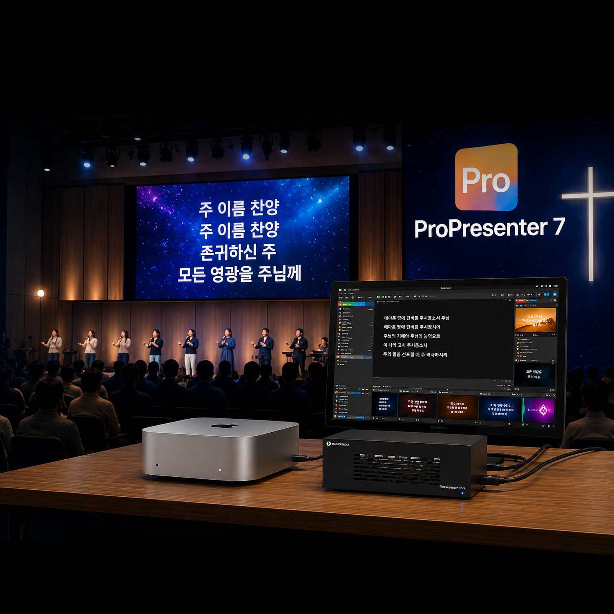
소다미디어 교회 자막 올인원 패키지 교회 예배 자막, 이제 전문 시스템으로 운영하세요.
ㅣ
프로프리젠터 올인원 패키지
교회 자막
Mac Mini를 기반으로 안정적인 교회 자막 시스템을 구축해 드리며
설치 및 교육과 사후관리까지 원스톱으로 지원합니다.
ProPresenter 7 라이센스
다중 화면 출력을 지원하여 교회 본당 LED 화면, 프로젝터나,찬양팀 모니터(Stage Display) 등을 각각 다른 화면 구성으로 동시에 출력이 가능합니다.단순한 PPT 방식이 아닌 예배 환경에 최적화된 기능을 제공하여 예배 진행의 완성도를 높여줍니다.
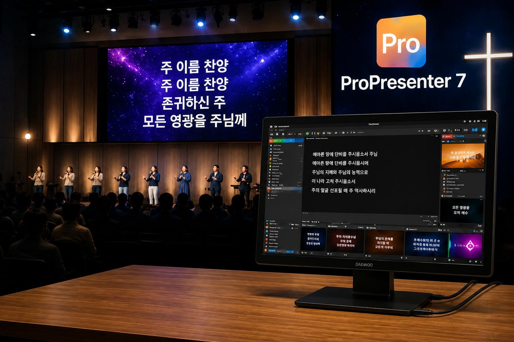
주요 기능
- 찬양 가사 송출
- 설교 자막 및 성경 구절 표시
- 영상 및 이미지 재생
- 다중 디스플레이 출력
- 온라인 예배 자막 송출
- 실시간 자막 수정
- 예배 순서 관리
- 찬양팀/설교자 전용 화면
소다미디어는 다년간 축적된 전문 노하우를 바탕으로 ProPresenter가 최고의 성능을 발휘할 수 있도록 검증된 Mac mini 환경으로 구성하여 안정적인 예배 자막 운영을 지원합니다.
패키지 구성품
교회 규모와 예배 환경에 맞춰 상담부터 설치, 세팅, 교육, 사후 지원까지 체계적으로 지원하여 안정적인 ProPresenter 운영 환경을 구축해 드립니다.-
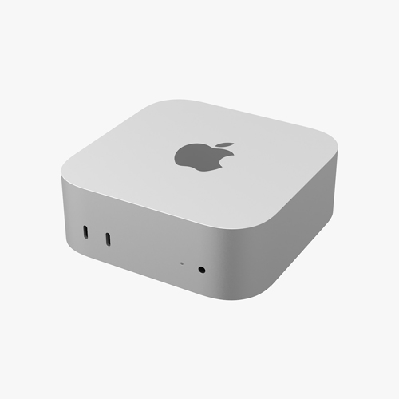
맥미니 -
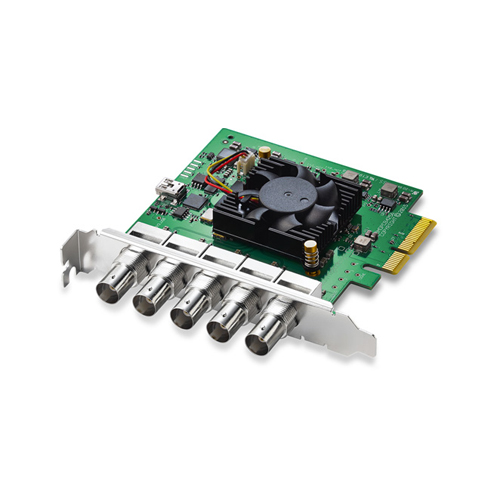
덱링크 Duo 2 -
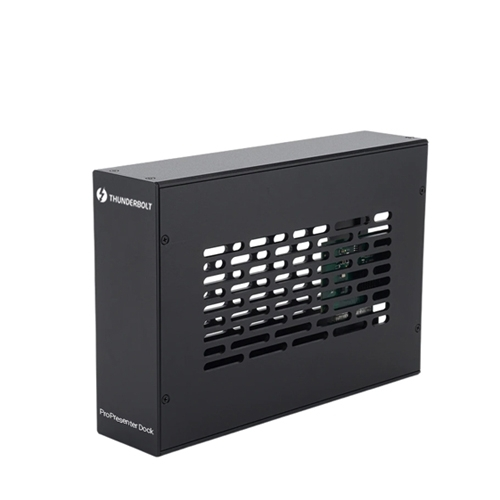
PP-DOCK -
 키보드/마우스
키보드/마우스
-
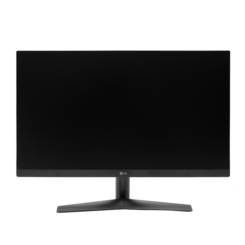
27인치 모니터 -
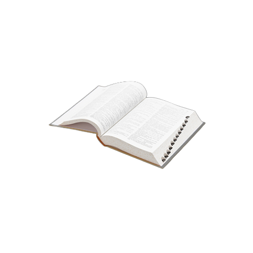
성경파일 -
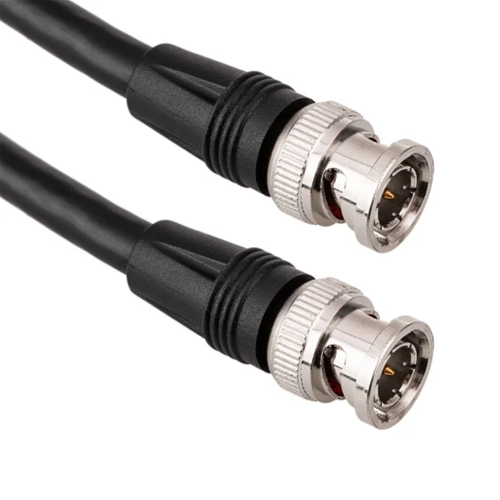
SDI 케이블 - 애플케어+
-
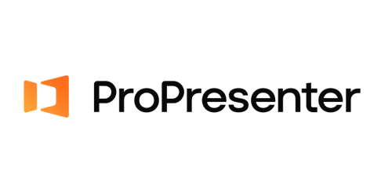
-
라이센스(1 year)
카드 1회 등록으로 자동 연장됩니다. 라이선스 비용 외 별도 추가 요금은 없으며, 잔여 기간 환불은 불가합니다.
해당 패키지 구성은 PC 하드웨어 구성과 라이센스 방문 설치 교육비가
모두 포함된 ALL-In-One 패키지 상품입니다.
제품 결제 후 환불 취소가 어렵습니다.
고객센터로 상담 요청하시면 최적의 솔루션을 제공하겠습니다.
모두 포함된 ALL-In-One 패키지 상품입니다.
제품 결제 후 환불 취소가 어렵습니다.
고객센터로 상담 요청하시면 최적의 솔루션을 제공하겠습니다.
Mac Mini의 장점
교회 자막 운영에 최적화된 환경을 제공합니다.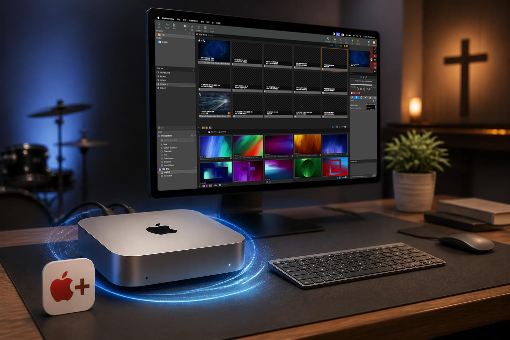
예배 중 높은 안정성
- 안정적인 macOS 환경
- 낮은 소음과 전력 소비
- 빠른 부팅 속도
- 장시간 운영에 적합
설치 및 세팅 지원
전문 담당자가 직접 설치 및 초기 세팅을 진행합니다.설치 지원 항목
- ProPresenter 설치
- 라이선스 등록
- 화면 출력 설정
- 프로젝터 연결
- LED 전광판 연동
- 방송 송출 연동
- 기본 템플릿 구성
- 예배 운영 환경 최적화
운영 교육 제공
처음 사용하는 분들도 쉽게 활용할 수 있도록 교육을 제공합니다. 실제 예배 상황을 기준으로 교육을 진행하여 누구나 쉽게 사용할 수 있습니다.교육 내용
- 기본 화면 구성 이해
- 찬양 가사 등록 방법
- 설교 자료 송출 방법
- 영상 재생 및 제어
- 플레이리스트 구성
- 예배 순서 관리
- 실전 예배 운영 방법
- 사후 관리
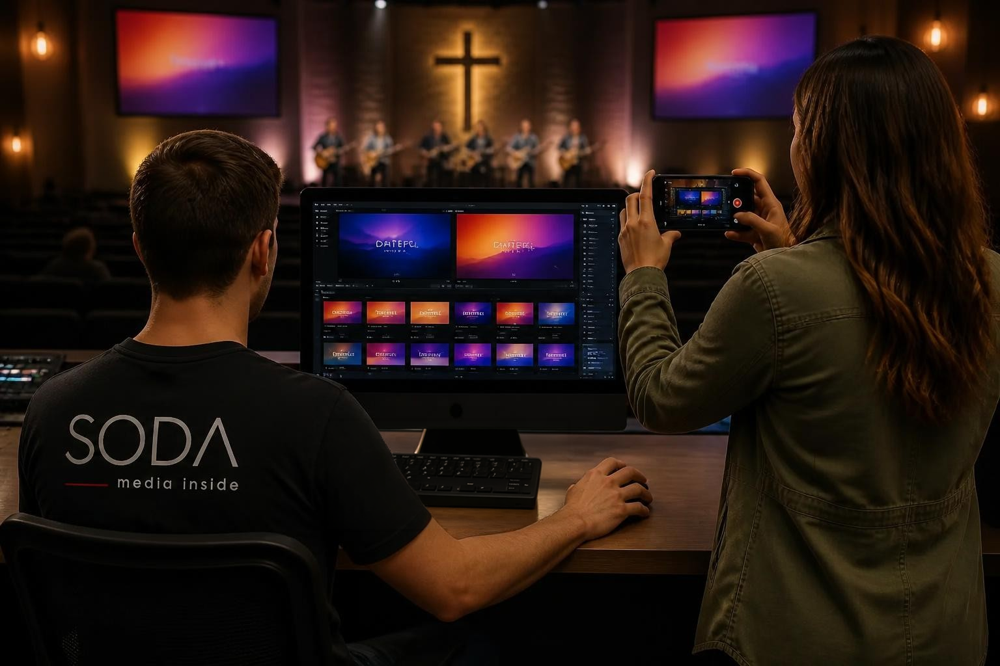
전 세계 교회표준
예배 자막·영상 송출 프로그램
PowerPoint vs ProPresenter 7 비교

| 기능 | PowerPoint | ProPresenter 7 |
|---|---|---|
| 가사 송출 | 가능 | 매우 편리 |
| 다음 가사 보기 | 불가 | 가능 |
| 찬양팀 모니터 | 불가 | 가능 |
| 다중 출력 | 제한적 | 강력 |
| 라이브 송출 연동 | 별도 작업 | 쉬움 |
| 성경 구절 관리 | 불편 | 편리 |
| 예배 순서 관리 | 불편 | 편리 |
구성도
블럭 다이어그램 예시입니다.PP-DOCK은 Mac mini의 출력 한계를 확장하여 다수의 독립 영상 출력을 구성할 수 있으며, ProPresenter의 멀티스크린 운영에 최적화된 환경을 제공합니다
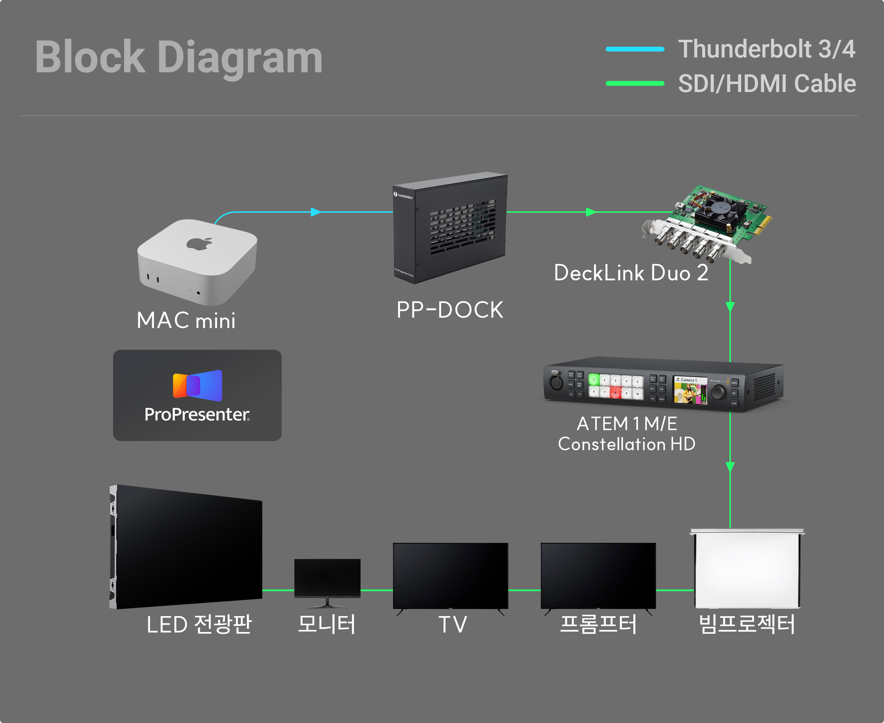
다양한 활용도
천장, 벽, 기둥, 트라이포드(삼각대)등 다양하게 설치가 가능하며 우수한 영상 출력으로 교회, 학원, 사무실, 라이브, 스포츠, 화상회의, 병원 등 다양한 환경에서 최적의 방송 비디오 영상 출력 스트리밍이 가능합니다. 종교시설
종교시설 화상회의
화상회의 현장중계
현장중계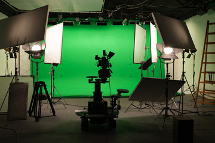
스튜디오1년 무상 품질보증
소다미디어에서 PTZ 카메라를 구매 후 1년 무상 A/S를 보증합니다.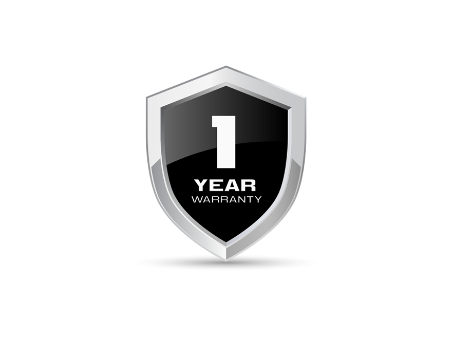
(보증 제외 사항: 사용자의 부주의(충격, 침수 등), 임의 분해/개조, 비정상적 사용으로 인한 고장은 유상 수리 대상입니다.)원격 조정
카메라의 팬, 틸트, 줌을 원격으로 조정할 수 있어 사용자의 편의성을 높여줍니다.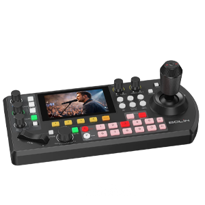
KBD-PLUS(옵션)
카메라 1~10번프리셋 255개 Max
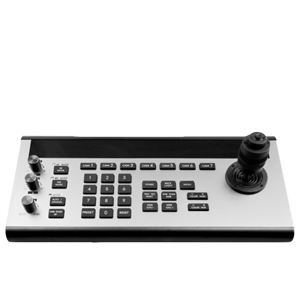
SMC-100(옵션)
카메라 1~7번프리셋 255개
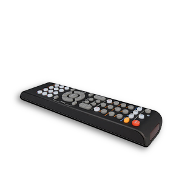
리모컨(포함)
카메라 1~4번프리셋 9개 Max
인터페이스
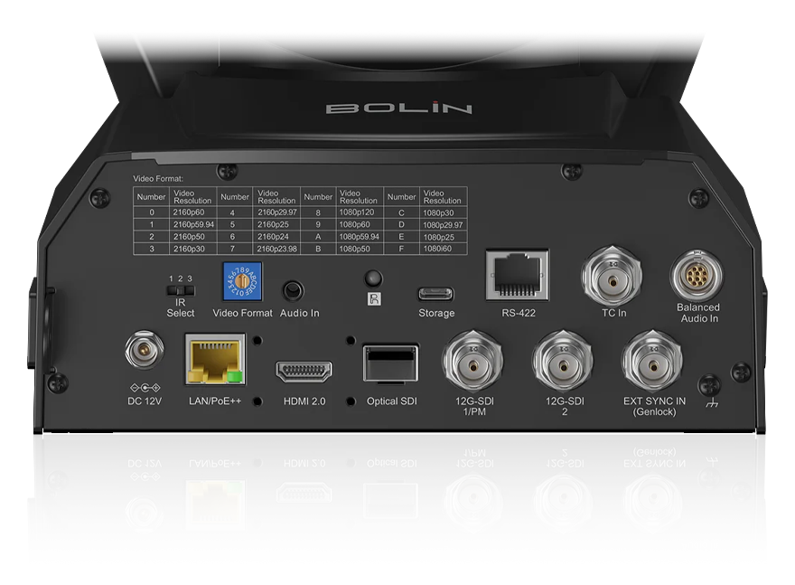
- 12G-SDI 1 - PM
- 12G-SDI 2
- Genlock
- Optical SDI SFP Slot
- HDMI 2.0
- IP Video Streaming
- Time Code
- RS422 Serial Control
- Balanced Mini XLR Audio Input with Phantom Power
- 3.5 mm Audio Input
- 1G LAN Port with POE++ Power Input
- USB C Recording
- Genlock
LCD Display
전면 LCD 화면을 통해 IP 주소와 비디오 해상도 형식 및 코덱 등 카메라에 설정된 정보를 손쉽게 확인할 수 있습니다.
SPECIFICATIONS
RangeImage
Image Sensor
1 Inch Sony Back-illuminated CMOS
Number of effective pixels
50MP (3840x2160)
Zoom
Optical Zoom 20X, Digital Zoom 16X
Shutter Speed
1/25 sec to 1/100K sec (24 steps)
Focus
Auto, Manual
White Balance
Auto,ATW,Indoor,One Push WB,Manual WB,Outdoor Auto
Minimum Illumination
0.5Lux(F2.8, AGC ON)
Connect
SDI Output
12G-SDIㅣ2160p60/50/30/25, 1080p60/50/30/25
HDMI Output
HDMI 2.0ㅣ2160p60/50/30/25, 1080p60/50/30/25
Connectors
HDMI, 12G-SDI, RJ45, DC12V
Control Interface
RS422, RS232, IP Control, IR Remote
Function
Pan/Tilt Movement
PAN: 340° (-170° to +170°); Fully proportional 0.05°〜70°/S
TILT: 210° (-30° to +180°); Fully proportional 0.05°〜70°/S
TILT: 210° (-30° to +180°); Fully proportional 0.05°〜70°/S
Preset
255 positions, Speed 70°/s, 0~5 Level Adjustable, Accuracy: 0.05°
Dimension
Operating Temperature
-10 to +50 (°C)
Dimension
200x270x253mm (WxHxD)
Weight
4.45kg
Power
DC 12V(Min 38W, MAX 42W), PoE++